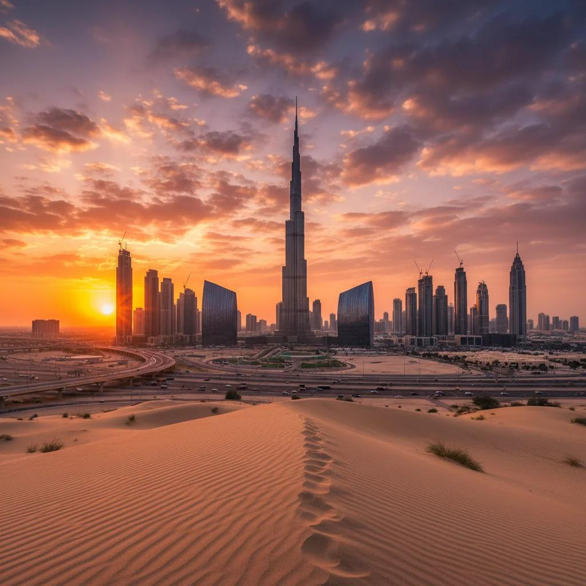

Туризм в ОАЭ:
от пустыни
до мирового
центра отдыха.
Пустыня. Роскошь. Современные технологии.
Как страна песчаных дюн стала одним из самых удивительных туристических направлений мира? Открой её историю — и проверь свои знания.

Там, где пески
встречаются с будущим
Насколько хорошо
ты знаешь Эмираты?
20 вопросов, чтобы увидеть страну по-новому.
Выбери ответ — и двигайся к новым открытиям.
Небольшая подсказка
Без регистрации. Ответы сохраняются только в этом браузере.
Одна страна.
Много впечатлений.
Современные города и древние традиции.
Побережье, горы и бескрайние пески.
Дубай
Город, который превращает амбициозные идеи в достопримечательности. Небоскрёбы, морское побережье и традиционные рынки складываются в один необычный маршрут.
Как появился
центр притяжения?
Туристический успех складывается из инвестиций,
инфраструктуры и разнообразия впечатлений.
Пустыня стала преимуществом.
А инвестиции — возможностями.
ОАЭ объединили природные особенности с современной инфраструктурой. Аэропорты связывают страну с миром, отели принимают разных путешественников, а необычные достопримечательности становятся самостоятельным поводом для поездки.
Инвестиции и инфраструктура
Аэропорты, дороги, гостиницы и качественный сервис.
Уникальные впечатления
Архитектура, пляжи, пустыня, музеи и тематические парки.
Международное продвижение
Реклама, выставки, спортивные и культурные события.
международных ночующих посетителей в 2025 году
Данные относятся к Дубаю, а не ко всем ОАЭ. Рост рассчитан по опубликованным значениям.
Источник: Dubai DET ↗
О проекте и гипотезе исследования
Тема: «Развитие туризма в ОАЭ: почему пустынная страна стала мировым центром отдыха».
Цель: выявить факторы туристического успеха ОАЭ и предложения, которые привлекают путешественников. Объект — туристическая отрасль; предмет — условия развития и способы международного продвижения.
Гипотеза: успех объясняется климатом, инвестициями, инфраструктурой, уникальными достопримечательностями и активной рекламой.
Методы: анализ информации и рекламных материалов, сравнение, классификация, количественный подсчёт и анкетирование.
Исследование в целом подтверждает гипотезу. При этом рост числа посетителей сам по себе не доказывает влияние отдельного фактора.
Для кого создают туристические предложения?
| Путешественники | Предложения | Главный акцент |
|---|---|---|
| Молодёжь | Аквапарки, тематические парки, необычные локации | Активность и новые эмоции |
| Семьи с детьми | Семейные курорты, пляжи, аквариумы | Удобство и разнообразие досуга |
| Любители роскоши | Пятизвёздочные отели, рестораны | Сервис и индивидуальный подход |
| Любители приключений | Пустынные сафари, горы Хаджар | Природа и необычные впечатления |
| Любители культуры | Музеи, мечети, районы Шарджи | История и традиции |
| Деловые путешественники | Конференции, выставки, бизнес-отели | Международные связи и инфраструктура |
Стратегия 2031 и вызовы развития
Национальная туристическая стратегия ОАЭ к 2031 году предусматривает вклад туризма в ВВП в размере 450 млрд дирхамов, дополнительные инвестиции 100 млрд дирхамов и 40 млн гостиничных гостей. Это цели, а не уже достигнутые показатели.
Основные вызовы — летняя жара, стоимость отдельных услуг, потребность в воде и энергии и нагрузка на окружающую среду. Дальнейшее развитие требует качества услуг, доступности отдыха и бережного использования ресурсов.
Официальная стратегия ОАЭ ↗Что учесть при планировании путешествия?
- Определи цель поездки: пляжи, культура, шопинг или приключения.
- Сравни общий бюджет: перелёт, отель, питание, транспорт и экскурсии.
- Проверь сезон и прогноз погоды: в летнюю жару прогулки менее комфортны.
- Уважай местные традиции и требования к одежде в религиозных местах.
- Проверь условия отеля, дополнительные расходы и отзывы.
- Выбирай ответственных организаторов и береги природу.
Анкета: какое путешествие выбрал бы ты?
Эта анкета помогает изучить предпочтения. Здесь нет правильных и неправильных ответов. Заполни её и сохрани свои ответы для исследования.
Ответы не отправляются на сервер. Для настоящего исследования собери ответы 15–30 участников и подсчитай результаты. Данные опроса здесь не выдумываются.